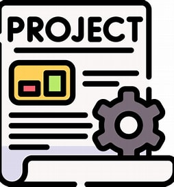

Desktop Snapshot
This screenshot shows my actual desktop while working on this project. On the left, Visual Studio Code is open and active — that’s where I write and refine my HTML and CSS. On the right, Microsoft Edge displays a live preview of my site. Supporting apps like ShellHost, multiple Windows Explorer windows, Realtek Audio Control, and Settings are open in the background to help me manage files and system preferences.

Currently Open Apps
- Visual Studio Code (active window)
- ShellHost
- Microsoft Edge
- Windows Explorer (5 instances)
- Realtek Audio Control
- Settings
You should use this screenshot as a map to understand where the apps are placed around each other on the screen, and to understand operating system components not visible in app screenshots — like the taskbar, terminal, and workspace layout — which play a key role in how I build and preview my site.
About Me
Hello! I'm Dennis Felicia, a student passionate about web development and programming. I enjoy customizing layouts, refining site structure, and learning new design techniques.
Course Hub
Explore course materials, assignments, and helpful resources to support your learning journey.

Projects
View my completed web projects and demos showcasing HTML, CSS, and JavaScript skills.
Updates
Check out the latest changes, improvements, and feedback incorporated into this final project.
Resources
Helpful links and tools for web development:
Contact
If you'd like to connect or ask questions, feel free to reach out via email or GitHub.